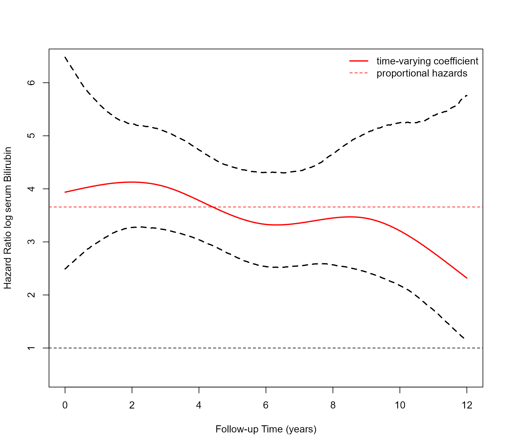

Time Varying Effects
Dimitris Rizopoulos
2026-09-16
Source:vignettes/Time_Varying_Effects.Rmd
Time_Varying_Effects.RmdNon Proportional Hazards
The basic definition of the joint model assumes the coefficients that
quantify the association between the versions of the longitudinal
outcomes and the hazard of the event are time-constant (i.e., the
proportional hazards assumption). We can relax this assumption by
specifying time-varying coefficients via the
functional_forms argument of function
jm().
We will illustrate this capability using the PBC dataset. We start by fitting a Cox model for the composite event transplantation or death, including sex as a baseline covariate:
pbc2.id$status2 <- as.numeric(pbc2.id$status != 'alive')
CoxFit <- coxph(Surv(years, status2) ~ sex, data = pbc2.id)We aim to assess the strength of the association between the risk of
the composite event and the serum bilirubin level. We will describe the
patient-specific profiles over time for this biomarker using a linear
mixed-effects model, where we include an intercept in both the fixed and
random effects, as well as the linear and quadratic time effects. In the
fixed effects, we also include the interaction of the time effect and
sex. The syntax to fit this model with lme() is:
fm <- lme(log(serBilir) ~ poly(year, 2) * sex, data = pbc2,
random = ~ poly(year, 2) | id, control = lmeControl(opt = 'optim'))The default call to jm() adds the subject-specific
linear predictor of the mixed model as a time-varying covariate in the
survival relative risk model:
jointFit1 <- jm(CoxFit, fm, time_var = "year")
summary(jointFit1)
#>
#> Call:
#> JMbayes2::jm(Surv_object = CoxFit, Mixed_objects = fm, time_var = "year")
#>
#> Data Descriptives:
#> Number of groups: 312 Number of events: 169 (54.2%)
#> Number of observations:
#> log(serBilir): 1945
#>
#> DIC WAIC LPML
#> marginal 4347.328 6109.815 -3487.499
#> conditional 8712.938 8455.463 -4540.759
#>
#> Random-effects covariance matrix:
#>
#> StdDev Corr
#> (Intr) 1.3031 (Intr) p(,2)1
#> p(,2)1 21.5646 0.6718
#> p(,2)2 12.2502 -0.2408 -0.1198
#>
#> Survival outcome:
#> Mean StDev 2.5% 97.5% P Rhat
#> sexfemale -0.1578 0.2680 -0.6374 0.3961 0.5458 1.0034
#> value(log(serBilir)) 1.2969 0.0956 1.1170 1.4854 0.0000 1.0247
#>
#> Longitudinal outcome: log(serBilir) (family = gaussian, link = identity)
#> Mean StDev 2.5% 97.5% P Rhat
#> (Intercept) 1.4887 0.2258 1.0513 1.9331 0.0000 1.0034
#> poly(year, 2)1 29.6265 5.2082 19.6130 39.8990 0.0000 1.0385
#> poly(year, 2)2 -4.7674 3.1874 -11.2709 1.2877 0.1311 1.0093
#> sexfemale -0.4738 0.2391 -0.9373 -0.0012 0.0496 1.0018
#> p(,2)1 -5.3098 5.4130 -16.0293 5.2024 0.3207 1.0574
#> p(,2)2 6.2334 3.3565 -0.1724 13.0465 0.0542 1.0215
#> sigma 0.3025 0.0061 0.2910 0.3149 0.0000 1.0026
#>
#> MCMC summary:
#> chains: 3
#> iterations per chain: 3500
#> burn-in per chain: 500
#> thinning: 1
#> time: 15 secTo specify that the association of serum bilirubin may change over
time, we include an interaction of this time-varying covariate with a
natural cubic spline of time using function ns() from the
splines package. Important Note: For
this to work correctly, we need to explicitly specify the internal and
boundary knots for the B-splines basis, i.e., in the following example,
we set the internal knots at 3, 6, and 9 years, and the boundary knots
at 0 and 14.5 years:
form_splines <- ~ value(log(serBilir)) * ns(year, k = c(3, 6, 9), B = c(0, 14.5))
jointFit2 <- update(jointFit1, functional_forms = form_splines,
n_iter = 6500L, n_burnin = 2500L)
summary(jointFit2)
#>
#> Call:
#> JMbayes2::jm(Surv_object = CoxFit, Mixed_objects = fm, time_var = "year",
#> functional_forms = form_splines, n_iter = 6500L, n_burnin = 2500L)
#>
#> Data Descriptives:
#> Number of groups: 312 Number of events: 169 (54.2%)
#> Number of observations:
#> log(serBilir): 1945
#>
#> DIC WAIC LPML
#> marginal 4339.228 6124.230 -3449.639
#> conditional 8708.186 8447.553 -4509.049
#>
#> Random-effects covariance matrix:
#>
#> StdDev Corr
#> (Intr) 1.3093 (Intr) p(,2)1
#> p(,2)1 21.8150 0.6809
#> p(,2)2 11.9878 -0.2276 -0.1222
#>
#> Survival outcome:
#> Mean StDev
#> sexfemale -0.1642 0.2835
#> value(log(serBilir)) 1.3704 0.2477
#> value(log(serBilir)):ns(year, k = c(3, 6, 9), B = c(0, 14.5))1 -0.2748 0.3118
#> value(log(serBilir)):ns(year, k = c(3, 6, 9), B = c(0, 14.5))2 0.0239 0.3692
#> value(log(serBilir)):ns(year, k = c(3, 6, 9), B = c(0, 14.5))3 -0.5696 0.7533
#> value(log(serBilir)):ns(year, k = c(3, 6, 9), B = c(0, 14.5))4 -1.1826 0.9127
#> 2.5% 97.5%
#> sexfemale -0.6957 0.4011
#> value(log(serBilir)) 0.9123 1.8689
#> value(log(serBilir)):ns(year, k = c(3, 6, 9), B = c(0, 14.5))1 -0.9048 0.2912
#> value(log(serBilir)):ns(year, k = c(3, 6, 9), B = c(0, 14.5))2 -0.6756 0.7640
#> value(log(serBilir)):ns(year, k = c(3, 6, 9), B = c(0, 14.5))3 -2.0441 0.9807
#> value(log(serBilir)):ns(year, k = c(3, 6, 9), B = c(0, 14.5))4 -2.8740 0.6086
#> P Rhat
#> sexfemale 0.5527 1.0041
#> value(log(serBilir)) 0.0000 1.3202
#> value(log(serBilir)):ns(year, k = c(3, 6, 9), B = c(0, 14.5))1 0.3988 1.2206
#> value(log(serBilir)):ns(year, k = c(3, 6, 9), B = c(0, 14.5))2 0.9562 1.0477
#> value(log(serBilir)):ns(year, k = c(3, 6, 9), B = c(0, 14.5))3 0.4177 1.5001
#> value(log(serBilir)):ns(year, k = c(3, 6, 9), B = c(0, 14.5))4 0.2227 1.2250
#>
#> Longitudinal outcome: log(serBilir) (family = gaussian, link = identity)
#> Mean StDev 2.5% 97.5% P Rhat
#> (Intercept) 1.4946 0.2256 1.0556 1.9361 0.0000 1.0023
#> poly(year, 2)1 30.0112 5.2490 19.9845 40.4760 0.0000 1.0422
#> poly(year, 2)2 -4.3607 3.1320 -10.4344 1.7848 0.1647 1.0479
#> sexfemale -0.4759 0.2402 -0.9440 -0.0048 0.0473 1.0024
#> p(,2)1 -5.4405 5.4597 -16.1193 5.2577 0.3178 1.0634
#> p(,2)2 5.9020 3.2388 -0.3603 12.1993 0.0677 1.0717
#> sigma 0.3031 0.0062 0.2911 0.3158 0.0000 1.0098
#>
#> MCMC summary:
#> chains: 3
#> iterations per chain: 6500
#> burn-in per chain: 2500
#> thinning: 1
#> time: 27 secThe spline coefficients do not have a straightforward interpretation. We, therefore, visualize the time-varying association of log serum bilirubin with the hazard of the composite event using the following piece of code:
x_times <- seq(0.001, 12, length = 501)
X <- cbind(1, ns(x_times, knots = c(3, 6, 9), B = c(0, 14.5)))
mcmc_alphas <- do.call('rbind', jointFit2$mcmc$alphas)
log_hr <- X %*% t(mcmc_alphas)
log_hr_mean <- rowMeans(log_hr)
log_hr_low <- apply(log_hr, 1, quantile, probs = 0.025)
log_hr_upp <- apply(log_hr, 1, quantile, probs = 0.975)
matplot(x_times, cbind(exp(log_hr_mean), exp(log_hr_low), exp(log_hr_upp)),
type = "l", col = c("red", "black", "black"), lty = c(1, 2, 2), lwd = 2,
xlab = "Follow-up Time (years)", ylab = "Hazard Ratio log serum Bilirubin",
ylim = c(0.5, 6.4))
abline(h = exp(coef(jointFit1)$association), lty = 2, col = "red")
abline(h = 1, lty = 2)
legend("topright", c("time-varying coefficient", "proportional hazards"),
lty = c(1, 2), lwd = c(2, 1), col = "red", bty = "n")
We observe that the 95% credible interval for the time-varying coefficient includes the horizontal line corresponding to proportional hazards. This is also confirmed by comparing the two models:
compare_jm(jointFit1, jointFit2)
#>
#> DIC WAIC LPML
#> jointFit1 4347.328 6109.815 -3487.499
#> jointFit2 4339.228 6124.230 -3449.639
#>
#> The criteria are calculated on the basis of the marginal log-likelihood.The WAIC and LPML indicate that jointFit1 is a better
model than jointFit2. The DIC has the same magnitude for
both models.